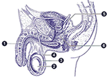
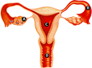
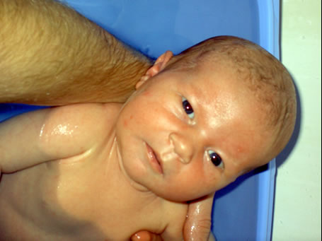
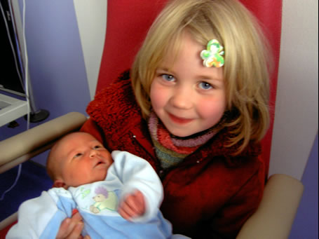

Florent
Chanavat |
Audrey
Le Goupil |
|
|
|  |
 |
Sont heureux de vous annoncer
la naissance de leur deuxième fille
ANITA
CHANAVAT
Le 15 décembre 2004
à 10h 41
|
Famille CHANAVAT - LE GOUPIL
12, rue Grataloup
69004 LYON
04.78.28.04.33 |
|
Anita, 7 jours
prend son bain
12, rue Grataloup |
|  |
Zoé, 5 ans
plutôt contente ?
chambre B06, maternité de la X-Rousse |
|  |
|